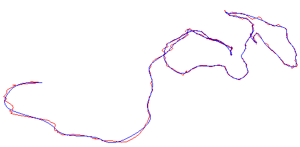

BSplineLeastSquares.h
Least-squares fit of a B-spline curve with another B-spline curve that has fewer control points. The image shows the original B-spline curve in red. That curve has 789 control points (samples came from medial curve generated in a virtual colonoscopy). The B-spline curve in blue was constructed by a least-squares fit and uses only 10 percent of the control points (78 points).
|  |